CHECKIT
INVESTOR RELATIONS
외국인 건강검진 플랫폼
외국인 건강검진 플랫폼

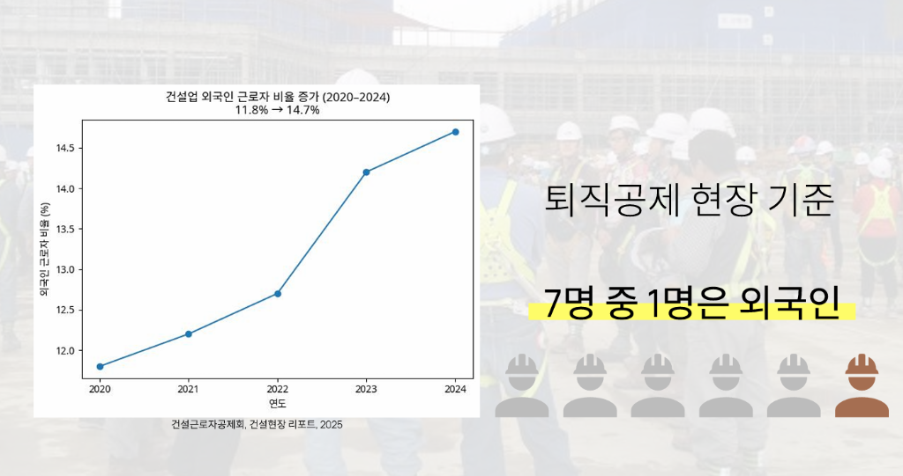

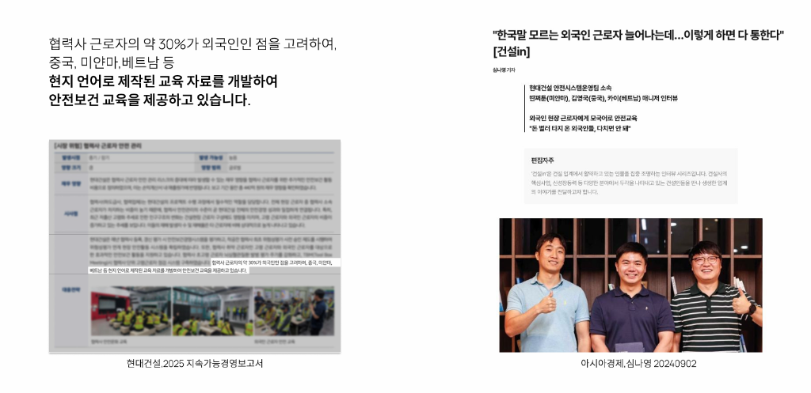


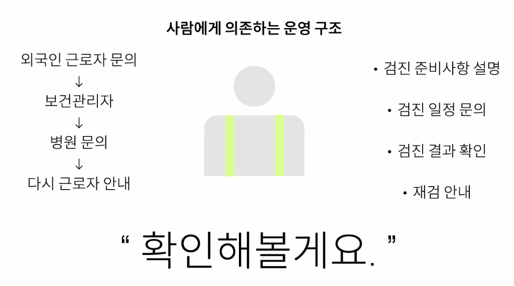
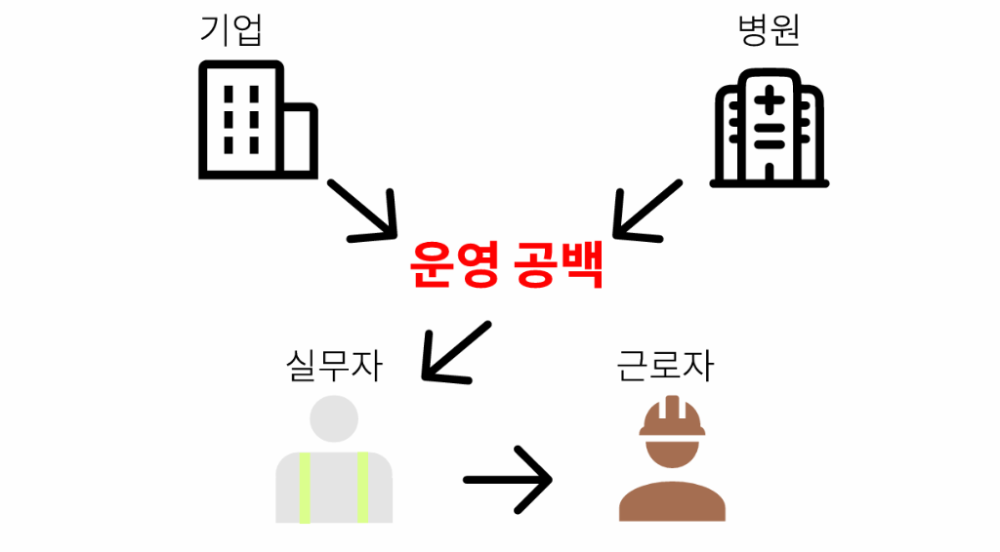


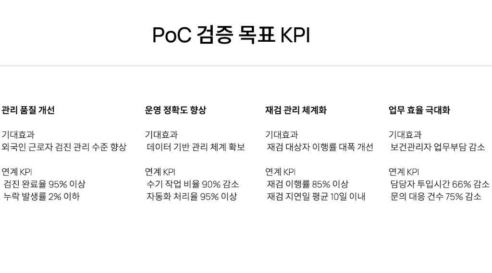
체킷은 기업 건강검진 및 산업보건 관리 SaaS플랫폼으로, 기업의 근로자 건강검진 관리 업무를 디지털화&자동화하여 데이터를 기반으로 체계적이고 지속 가능한 보건관리를 지원하는 서비스입니다.
| 기간 | 주요 활용 서비스 (Tech Stack) | 예상 비용 | 주요 내용 및 투자 사유 |
|---|---|---|---|
| 4월 | Firebase(Auth, Firestore), Cloudflare, GitHub, Antigravity, ChatGPT+ | 830,000원 | 기본 아키텍처 설계 및 다국어 데이터 스키마 고도화 |
| 5월 | Firebase(Auth, Firestore), Cloudflare, GitHub, Antigravity, ChatGPT+ | 830,000원 | 기업용 관리자 대시보드 및 근로자 예약 페이지 UI 개발 |
| 6월 | Firebase(Functions), Cloudflare, GitHub, Antigravity, ChatGPT+ | 860,000원 | 서비스 핵심(Functions) 자동 알림 로직 개발 및 통합 |
| 7월 | Firebase(Functions), Cloudflare, GitHub, Antigravity, ChatGPT+ | 860,000원 | 4개 국어 모듈 통합 및 권한 제어 시스템(RBAC) 최종 테스트 |
| 8월 | Firebase, Cloudflare, GitHub, Antigravity, ChatGPT+ | 890,000원 | 일반 테스트 실시 및 사용자 증가에 따른 리소스 확장 |
| 9월 | Firebase, Cloudflare, Vision API(OCR), Antigravity, ChatGPT+ | 810,000원 | 등록증 및 검진 결과지 자동 인식을 위한 OCR 기능 도입 |
| 10월 | Firebase, Cloudflare, Vision API, Antigravity, ChatGPT+ | 960,000원 | 베타 테스트 실시 및 OCR 기반 자동 입력 기능 고도화 |
| 11월 | Firebase, Cloudflare, Maps Platform, Cloud Vision API | 250,000원 | 정식 출시 및 위치 기반 인근 검진 병원 찾기 서비스 도입 |
| 12월 | Full Suite (Firebase, Maps, Vision, Cloudflare, AI Tools) | 1,060,000원 | 정식 서비스 운영 안정화 및 글로벌 사용자 트래픽 대응 |
* 위 비용은 클라우드 인프라 운영 및 개발 도구 구독료를 포함한 예상 지출이며, 사업 추진 상황에 따라 유연하게 조정될 수 있습니다.
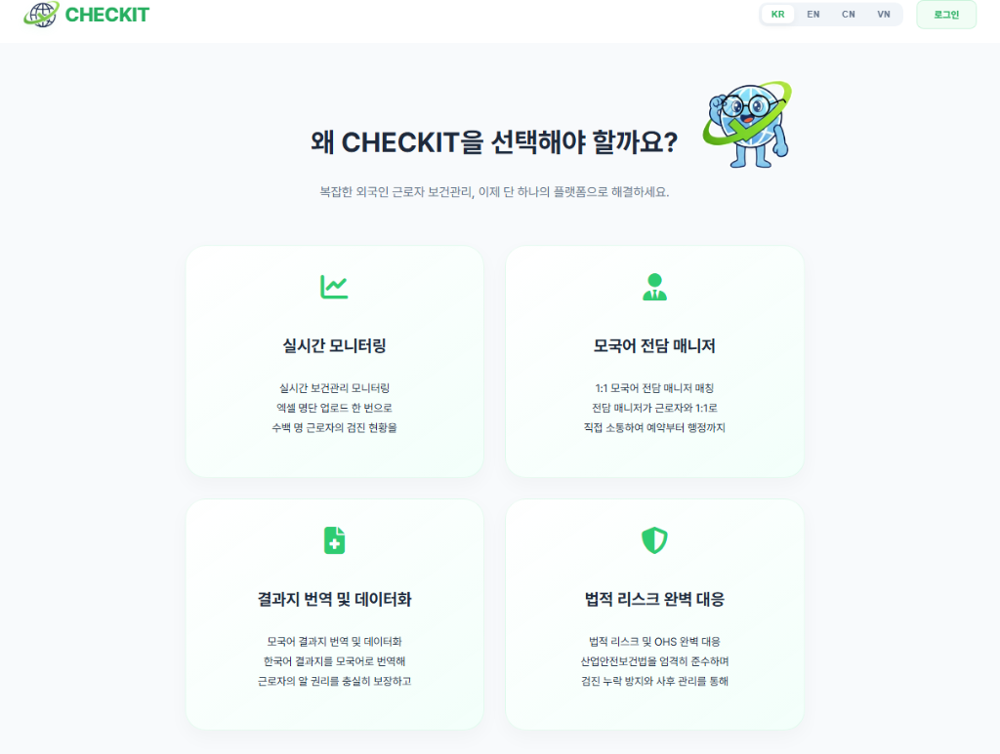
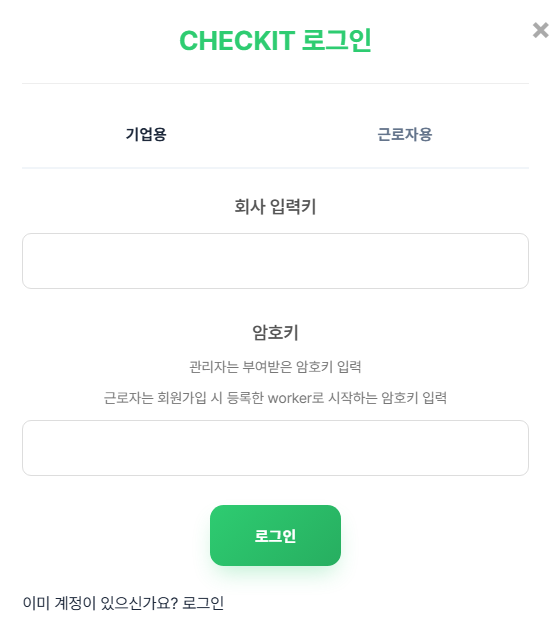
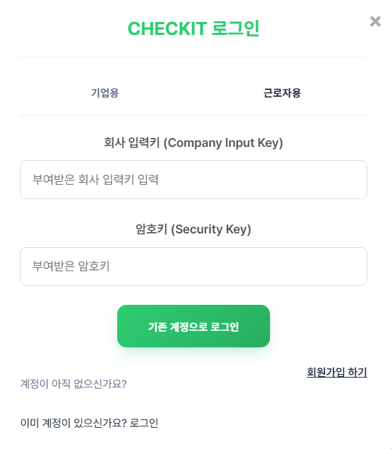
건설현장은 외국인 근로자 비중이 빠르게 높아지고 있지만,
건강검진 운영은 여전히 언어 장벽과 현장 관리자 의존 구조에 머물러 있어
비효율이 반복되고 있습니다.
체킷은 이 운영 공백을 줄이기 위해 기업 관리자와 근로자가 함께 사용하는
건강검진 운영 시스템으로 개발되었습니다.
체킷은 예약, 안내, 진행 관리, 결과 및 재검 추적까지 건강검진 전 과정을 표준화하고,
이를 데이터로 가시화해 현장과 본사가 한눈에 확인할 수 있도록 지원합니다.


체킷은 관리자가 근로자 정보 및 검진 필수 요건을 통합 등록하고,
제휴 병원 정보와 예약 가능 기간까지 함께 관리할 수 있도록 설계되었습니다.
이를 통해 건강검진 운영은 개별 연락과 엑셀 관리 중심의 분산 방식에서 벗어나,
현장 단위와 기업 단위로 동시에 관리 가능한 구조로 전환됩니다.
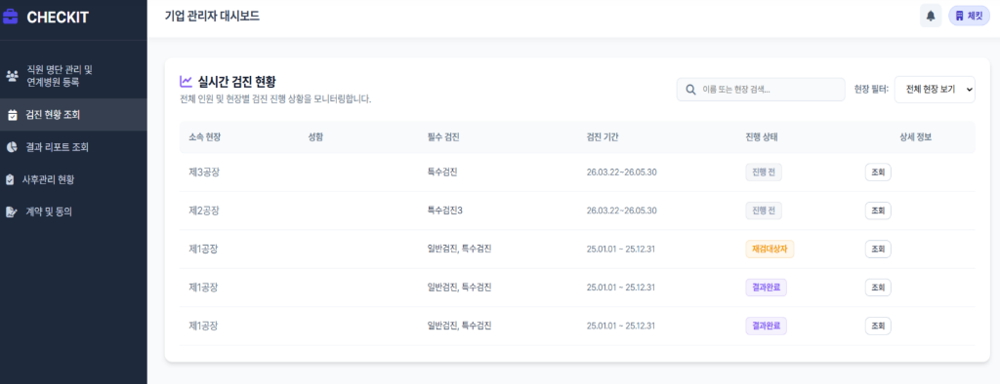
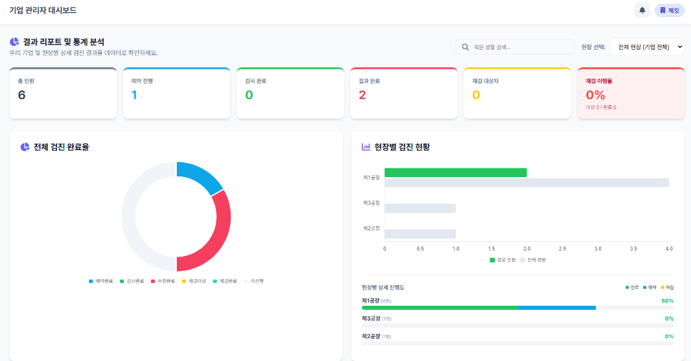

체킷은 전체 인원, 예약 진행, 검사 완료, 결과 완료, 재검 대상자, 재검 이행률 등
건강검진 운영 과정에서 발생하는 핵심 지표를 실시간으로 확인할 수 있도록 지원합니다.
현장별 검진 현황과 완료율을 시각화하여, 현장 담당자뿐 아니라
본사 차원에서도 검진 운영 상황을 통합적으로 파악할 수 있도록 설계되었습니다.
이는 외국인 근로자부터 시작하지만, 향후 내국인을 포함한
전체 근로자 건강검진 관리 체계로 확장 가능한 기반이 됩니다.

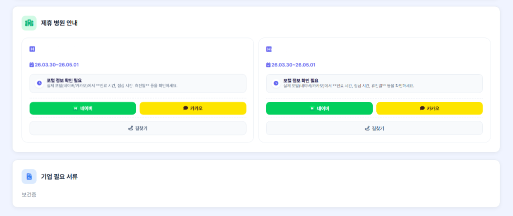
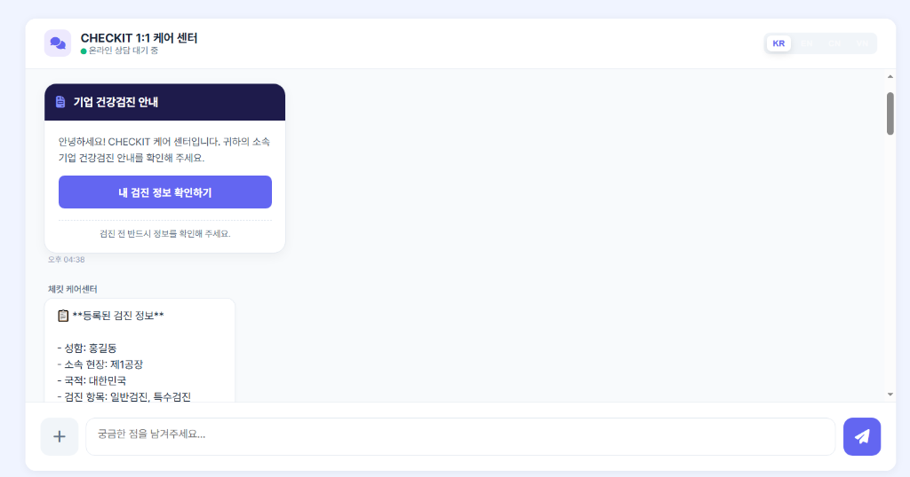


체킷은 근로자가 본인의 검진 진행상황, 검진 가능 기간, 제휴 병원 정보, 필요서류를
직접 확인할 수 있는 근로자 포털을 제공합니다.
또한 다국어 UI와 1:1 대화 기능을 통해 검진 일정 안내, 준비사항 전달, 문의 응대까지 지원하여 검진 과정에서 발생하는 언어 및 커뮤니케이션 혼선을 획기적으로 줄일 수 있습니다.